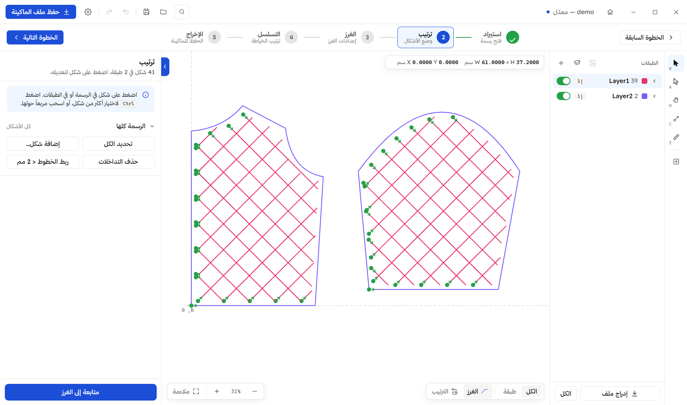

Stitchline
ستيتشلاين · خياطة الباترون وقص الليزر
دليل المستخدم
شرح كامل ومصوَّر لبرنامج ستيتشلاين: من فتح الرسمة وترتيب أشكالها وضبط الغرز وقص الليزر، إلى حفظ ملف الماكينة
SLW
ونقله إلى الماكينة.

الإصدار
Stitchline 1.0.0
نظام التشغيل
Windows 10 / 11 (64-bit)
لغة الدليل
العربية
تاريخ الإعداد
2026-10-19